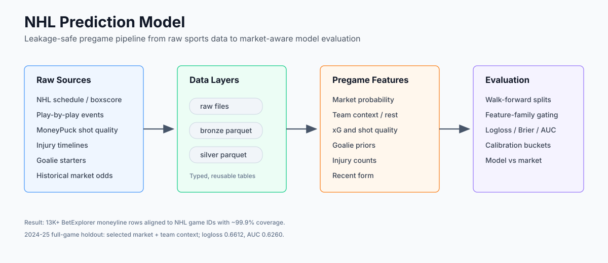
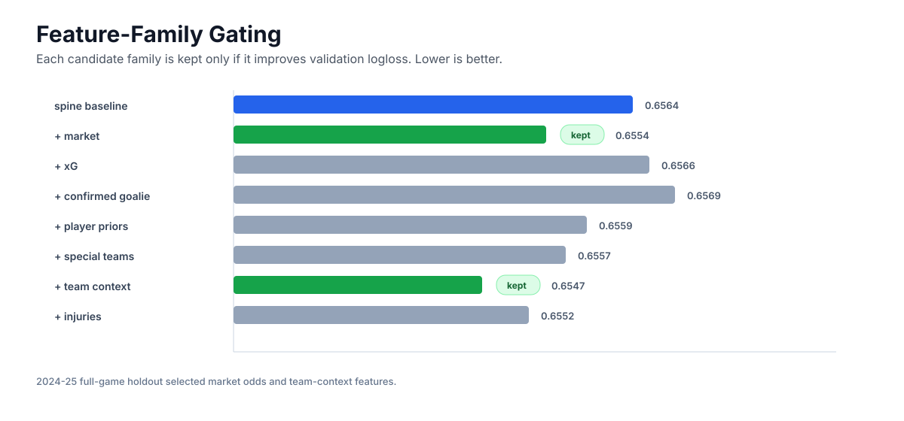
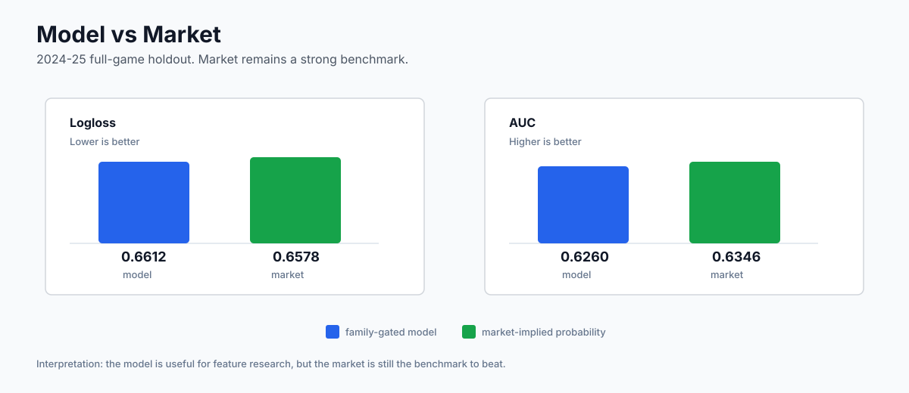
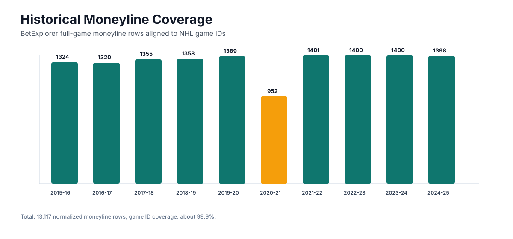

NHL Prediction Model
Leakage-safe Python pipeline for pregame NHL prediction using schedule, boxscore, play-by-play, shot-quality, injury, goalie, and betting-market data.
Built a raw/bronze/silver parquet workflow, aligned 13K+ historical moneyline rows to NHL game IDs, and evaluated pregame models against market baselines with logloss, Brier score, AUC, calibration, and feature-family gating.
Technical focus
- Normalized NHL schedule, boxscore, play-by-play, shot-quality, injury, goalie, and market-odds sources into reusable parquet layers.
- Designed pregame-only feature sets to avoid target leakage before puck drop.
- Compared model outputs against market-implied probabilities instead of treating raw accuracy as the only benchmark.
- Used validation-gated feature families so new signals had to improve logloss before entering the final holdout model.



